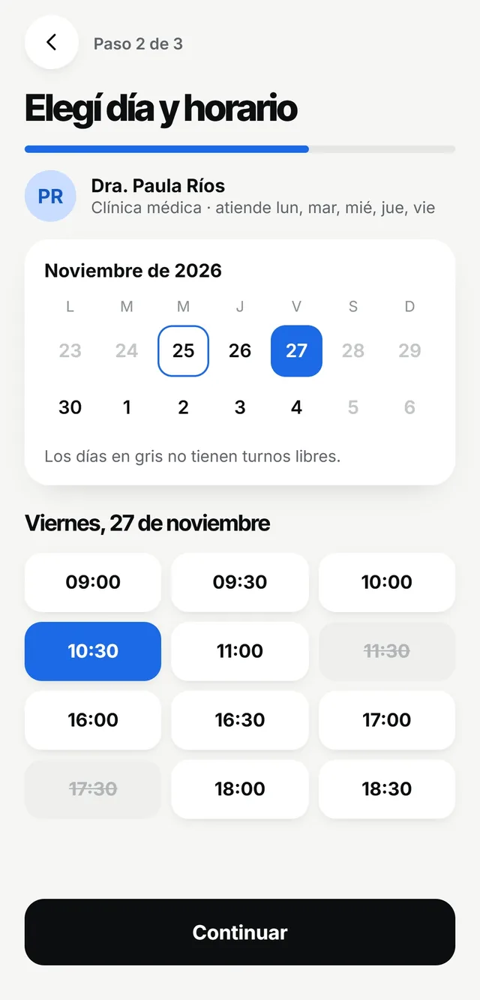

Proyecto conceptual Salud, app móvil
Turno
Un turno médico en tres toques, pensado para cualquier persona, a los 25 o a los 75.



Resumen del proyecto
- Industria
- Salud
- Producto
- App móvil para pacientes
- Mi rol
- Investigación, UX, UI y prototipo
- Duración
- 4 semanas
- Herramientas
- Figma, FigJam, JavaScript
- Estado
- Concepto con prototipo funcional. No está publicado como producto
Proyecto propio, sin cliente. La investigación es secundaria (benchmark, proto-personas y journey map) y las cifras son objetivos de diseño, no resultados medidos. El prototipo se validó con una evaluación heurística; el test con usuarios está planificado.
En un minuto
Problema
Sacar un turno implica llamar en horario de oficina, esperar y anotar a mano. La gente se olvida y el consultorio queda con huecos.
Enfoque
Una decisión por pantalla, progreso siempre visible y la pregunta “¿para quién es?” antes de empezar. La accesibilidad puso las reglas.
Resultado
Un prototipo funcional donde se puede reservar, reprogramar, cancelar y hacer check-in. La revisión encontró seis problemas: cinco corregidos y uno pendiente.
01Contexto
Sacar un turno no debería ser un trámite.
Hoy, sacar un turno médico implica llamar en horario de oficina, esperar en línea y anotar a mano el día y la hora. Muchas personas se olvidan del turno y el consultorio queda con huecos que nadie aprovecha.
- Reservar fuera del horario de atención
- Ver todos los horarios libres de un vistazo
- No olvidarse del turno
- Menos llamadas en recepción
- Menos ausentismo
- Reasignar rápido los turnos cancelados
- Público de todas las edades, incluidos adultos mayores
- Distintas obras sociales y prepagas
- Reserva para uno mismo o para un familiar
02Investigación
Entender cómo se saca un turno hoy.
Arranqué por los canales que la gente ya usa, para ver qué resuelven bien y dónde se traban.
Canales comparados
Teléfono, WhatsApp, portal web, app de la prepaga y la propuesta.
Proto-personas
Una paciente con poco tiempo y un adulto mayor que gestiona los turnos de la familia.
Etapas del journey
Desde que aparece la necesidad hasta salir de la consulta.
Benchmark de canales
| Función | Teléfono | Portal web | App prepaga | Turno | |
|---|---|---|---|---|---|
| Reservar fuera de horario | Responden después | ||||
| Ver horarios libres | Por día | ||||
| Recordatorio automático | Manual | ||||
| Reprogramar en un paso | Cancelar y volver a reservar | ||||
| Filtrar por cobertura | Preguntando | Preguntando | |||
| Turnos de familiares | Sólo el grupo | ||||
| Fácil para adultos mayores | Depende |
Deslizá la tabla para ver todas las columnas →
Lectura: el teléfono sigue siendo lo más simple para adultos mayores, pero obliga a llamar en horario. Las apps resuelven la reserva, pero con muchas pantallas, letra chica y sin pensar en quien reserva para otro.
Proto-personas
Martina, 32
Analista contable · trabaja de 9 a 18"Para sacar turno tengo que llamar justo en el horario en que estoy trabajando."
Objetivos
- Reservar en un rato libre, desde el celular
- Elegir un horario temprano
Frustraciones
- Llamadas en espera
- Olvidarse del turno y pagarlo igual
Roberto, 68
Jubilado · gestiona los turnos de su esposa"Las apps tienen letra chiquita y nunca sé si el turno quedó reservado."
Objetivos
- Sacar turnos para él y para su esposa
- Confirmación clara y en palabras simples
Frustraciones
- Botones chicos y jerga
- No saber en qué paso está
Journey map actual · Martina
Siente un malestar y decide ir a la clínica médica.
Busca qué médicos atienden con su obra social.
Llama en su hora de almuerzo y espera en línea.
Anota el turno en un papel o en el chat consigo misma.
Llega, se anuncia en recepción y espera.
Deslizá para recorrer las cinco etapas →
Hallazgos clave
El problema es el horario, no la reserva
Reservar es simple; lo difícil es poder hacerlo cuando la persona tiene tiempo.
Elegir requiere ver opciones
Por teléfono se ofrece un horario por vez. Ver la semana completa cambia la decisión.
La confirmación genera confianza
Sin un mensaje claro de "quedó reservado", las personas mayores vuelven a llamar para chequear.
Muchos reservan para otros
Hijos, padres o parejas gestionan turnos ajenos: el perfil familiar no es un extra.
03Definición
Un problema, bien planteado.
¿Cómo podríamos…?¿Cómo podríamos lograr que cualquier persona saque un turno médico en menos de un minuto, sin llamar y sin olvidarse de ir?
Principios de diseño
Una pantalla, una decisión
Cada paso pide una sola cosa: con quién, cuándo, confirmar.
Siempre sé dónde estoy
Barra de progreso y "Paso 2 de 3" en cada pantalla del flujo.
Legible para todos
Texto de 16 px como mínimo, contraste AA y áreas táctiles de 48 px.
Priorización MoSCoW del MVP
- Reserva en 3 pasos
- Horarios libres
- Recordatorio
- Cancelar y reprogramar
- Filtro por cobertura
- Perfiles familiares
- Check-in
- Recetas digitales
- Resultados de estudios
- Teleconsulta
- Pagos en la app
04Arquitectura
Menos pantallas, caminos más cortos.
Cuatro secciones en la barra inferior y la reserva como acción principal, a un toque desde cualquier lugar.
Mapa del sitio
- Turno
- Inicio próximo turno · accesos
- Reservar
- 1 · Especialidad y profesional
- 2 · Día y horario
- 3 · Confirmación
- Mis turnos próximos · historial
- Recetas y estudios
- Perfil cobertura · familiares · texto grande
Flujo principal: reservar un turno
05Wireframes
Estructura antes que estilo.
Wireframes en baja fidelidad para validar jerarquía y recorrido sin distraerse con colores. Los números marcan las decisiones de cada pantalla.
- El próximo turno arriba de todo: es lo que más se consulta.
- Cuatro accesos grandes en lugar de un menú.
- Barra inferior con cuatro secciones, sin menú hamburguesa.
- Un solo buscador para especialidad o nombre.
- Especialidades frecuentes como chips.
- Cada profesional muestra su próximo horario libre.
- Progreso visible: paso 2 de 3.
- Calendario de dos semanas, sin abrir un selector.
- Horarios ocupados atenuados, no ocultos.
- Resumen con todos los datos antes de confirmar.
- Recordatorio activado por defecto.
- Un único botón principal y la política de cancelación debajo.
06Decisiones
Del wireframe a la interfaz.
Al revisar el recorrido con las proto-personas y con heurísticas de usabilidad, cambié tres cosas.
Selector de fecha nativo
Abría una rueda de fechas y recién después mostraba si había horarios. Muchos días aparecían vacíos.
Calendario de dos semanas a la vista
Los días sin turnos se ven atenuados desde el principio. Se evita el ida y vuelta de "este día no hay".
Confirmación con un toast
Un aviso de dos segundos decía "Turno reservado". Fácil de perder, sobre todo para Roberto.
Pantalla de éxito con el resumen
Una pantalla completa con el turno, la dirección y "Agregar al calendario". No queda duda de que se reservó.
Familiares dentro del perfil
Para reservar para otra persona había que ir a Perfil, cambiar de usuario y volver.
"¿Para quién es?" al empezar
Una pregunta al inicio del flujo, que se saltea si la cuenta no tiene familiares cargados.
07Sistema de diseño
Calmo, claro y accesible.
Un azul confiable como color de acción, neutros cálidos para bajar la ansiedad y colores de apoyo sólo para categorías.
Color
#1D6AE5Blanco 4,95:1 · AA#1558C0Texto 6,09:1 · AA#0B7A6BBlanco 5,24:1 · AA#F5A524Con tinta 9,46:1#0D0E10#F6F6F4Tipografía
Componentes
Accesibilidad
- Contraste AA en todos los textos y botones
- Áreas táctiles de 48 × 48 px como mínimo
- Soporte de texto grande del sistema
- La información nunca depende sólo del color: los horarios ocupados también se tachan
- Etiquetas claras para lectores de pantalla
- Lenguaje simple, sin jerga médica ni administrativa
08UI final
Tres toques y listo.
El recorrido completo en alta fidelidad: del inicio a la confirmación.
Martina
¿Qué necesitás?
¿Con quién?
Elegí día y horario
Horarios disponibles
Revisá y confirmá
- Paciente
- Martina González
- Profesional
- Dra. Paula Ríos
- Fecha
- Jue 12 nov · 10:30
- Lugar
- Consultorio 4
- Cobertura
- OSEP · Plan 2
¡Listo, Martina!
Tu turno quedó reservado09Validación
Evaluación heurística del prototipo.
Antes de llevarlo a usuarios, evalué el prototipo navegable con las 10 heurísticas de Nielsen y recorrí paso a paso las tareas principales: reservar, reprogramar, cancelar, reservar para un familiar y hacer check-in. Cada problema lleva su severidad y corregí en el prototipo los más graves.
Hallazgos
| # | Problema y solución | Heurística | Sev. | Estado |
|---|---|---|---|---|
| 1 | Se podían reservar dos turnos para la misma persona a la misma hora, con profesionales distintos.Los horarios que ya tenés ocupados aparecen marcados como "Otro turno" y no se pueden elegir. | H5 · Prevención de errores | 3 | Corregido |
| 2 | Al reprogramar no se veía cuál era el horario actual: había que recordarlo.Arriba aparece "Tu turno actual" y en la grilla el horario actual queda marcado. | H6 · Reconocer antes que recordar | 3 | Corregido |
| 3 | El check-in se podía hacer a cualquier hora del día del turno, incluso horas antes o después.Se habilita desde 60 min antes hasta 30 min después; fuera de eso, indica desde qué hora. | H5 · Prevención de errores | 2 | Corregido |
| 4 | La explicación de los días en gris desaparecía, porque la app ya elegía el primer día libre.La explicación queda siempre debajo del calendario. | H10 · Ayuda y documentación | 2 | Corregido |
| 5 | "Texto más grande" agrandaba el contenido, pero no la barra inferior.Ahora también agranda la barra inferior. | H4 · Consistencia y estándares | 1 | Corregido |
| 6 | Cancelar un turno no se puede deshacer (aunque pide confirmación antes).Pendiente: sumar "Deshacer" mientras el horario siga libre. | H3 · Control y libertad | 1 | Pendiente |
Deslizá la tabla para ver todas las columnas →
Severidad según la escala de Nielsen: 1 cosmético, 2 menor, 3 mayor, 4 catastrófico. No encontré problemas de severidad 4.
Antes y después
Se podían reservar dos turnos para la misma persona a la misma hora, con profesionales distintos.
Los horarios que ya tenés ocupados aparecen marcados como "Otro turno" y no se pueden elegir.
Al reprogramar no se veía cuál era el horario actual: había que recordarlo.
Arriba aparece "Tu turno actual" y en la grilla el horario actual queda marcado.
Próximo paso: test con usuarios
Una evaluación experta encuentra problemas de usabilidad conocidos, pero no mide cómo se comportan las personas reales. El siguiente paso es un test moderado con el prototipo ya corregido, con estas metas y tareas:
Tareas del test con usuarios
| # | Tarea | Éxito si… |
|---|---|---|
| 1 | Sacá un turno de clínica médica para el jueves a la mañana. | Llega a la pantalla de éxito sin volver atrás más de una vez. |
| 2 | Pasá ese turno al viernes. | Encuentra "Reprogramar" en menos de 20 s. |
| 3 | Reservá un turno para tu mamá. | Elige el familiar correcto antes del paso 1. |
| 4 | Llegaste al consultorio: avisá que estás. | Hace check-in desde el inicio. |
Participantes: 5 personas, 3 de entre 25 y 45 años y 2 de más de 65, que hayan sacado al menos un turno médico en el último año.
10Aprendizajes
Lo que me llevo.
- Diseñar para el usuario más exigente (Roberto) mejoró la experiencia de todos.
- La confirmación es parte del producto, no un detalle de cierre.
- Mostrar lo que no está disponible ahorra más pasos que esconderlo.
- Correr el test con adultos mayores reales e iterar.
- Lista de espera: aviso cuando se libera un horario.
- Panel web para que recepción vea check-ins y huecos.